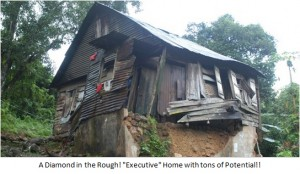
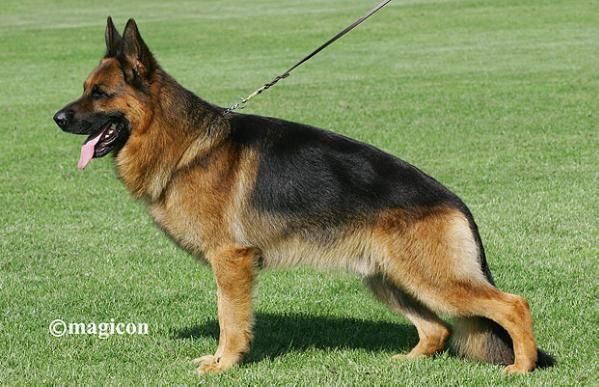
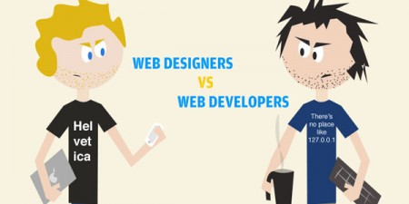

Размишлявам над парламентарните въпроси днес. Отне ми около 5 месеца за да си извадя разрешително за остъкляване на балкон, около 100 лева за проекта и още толкова за административни разходи. Също така ходих над 20 пъти до общината в които всеки път чаках средно по около час на опашка, пътувах средно около 30 минути във всяка посока и това е при положение, че не се изискваха никакви конструктивни промени, балкона беше тип лоджия и реално остъкляването не касае изменение във фасадата на блока (не ми се мисли ако трябваше да изменям конструкция)... Прочети повече -->
 Mercedes показаха два уникални AMG модела на Интернационалното Авто шоу в Австралия 2010. Естествено, че присъствието на Mercedes SLS AMG е задължително, но специално изложеният модел е боядисан в черен цвят с червени акценти или както Мерцедес го описват - designo magno Night Black.По интересен обаче за почитателите на марката е Concept 358. Concept 358 е базиран на C 63 AMG с цвят designo Pearl Orange, черни 19 цолови джанти, висококачествена кожа и естествено AMG спортен пакет. Този AMG пакет прави възможно на 6,3 литровия (6208 см3) V8 двигател да достигне мощност от 358 киловата (480 к.с.) и 600 Нм въртяящ момент. Прочети повече -->
Mercedes показаха два уникални AMG модела на Интернационалното Авто шоу в Австралия 2010. Естествено, че присъствието на Mercedes SLS AMG е задължително, но специално изложеният модел е боядисан в черен цвят с червени акценти или както Мерцедес го описват - designo magno Night Black.По интересен обаче за почитателите на марката е Concept 358. Concept 358 е базиран на C 63 AMG с цвят designo Pearl Orange, черни 19 цолови джанти, висококачествена кожа и естествено AMG спортен пакет. Този AMG пакет прави възможно на 6,3 литровия (6208 см3) V8 двигател да достигне мощност от 358 киловата (480 к.с.) и 600 Нм въртяящ момент. Прочети повече -->
Измина още една година, която надявам се ни направи по-опитни, по-мъдри и по-големи професионалисти.
През 2012 година имаше стабилизиране на цените на жилищните имоти. Спадът от началото на годината беше изместен от задържане на цените към края на периода. Купуваха се най-вече двустайни и тристайни апартаменти за задоволяване на жилищни нужди. Въпреки ниските цени на имотите, спекулативните сделки почти липсваха или бяха пренебрежимо малко. Преобладаващото търсене беше на нива от 25-40000Е. По-голямата част от сделките бяха със собствено финансиране, по-рядко купувачите прибягваха към ипотечни кредити, в повечето случаи до финансираха с малки потребителски кредити или помощ от роднини и приятели. Прочети повече -->
 Колеги, имам радостта да ви поканя на WordCamp Sofia 2012 – единствената за България конференция за WordPress, която ще се проведе на 20 октомври 2012 г. в Софтуерната академия на Телерик. WordCamp конференцията за WordPress и уеб технологии се организира за трета поредна година от българската WordPress общност. Това издание на WordPress конференцията ще събере лектори от България и чужбина, експерти по уеб разработка, CMS системи и WordPress. Ще има два паралелни потока: Прочети повече -->
Колеги, имам радостта да ви поканя на WordCamp Sofia 2012 – единствената за България конференция за WordPress, която ще се проведе на 20 октомври 2012 г. в Софтуерната академия на Телерик. WordCamp конференцията за WordPress и уеб технологии се организира за трета поредна година от българската WordPress общност. Това издание на WordPress конференцията ще събере лектори от България и чужбина, експерти по уеб разработка, CMS системи и WordPress. Ще има два паралелни потока: Прочети повече -->
Като служители на техническа поддръжка в ICN.Bg почти ежедневно получаваме запитвания от клиенти относно начините за оптимизиране на сайтoве с цел класиране на по-висока позиция в резултатите на търсещите машини (seo оптимизация за търсачки).Направи ни впечатление, че голяма част от клиентите имаха определено стара и погрешна информация относно оптимизацията на сайтове... Прочети повече -->
Немската овчарка (на немски: Deutscher Schaferhund) Големина: голямо; Податливост на тренировка: висока; Поддръжка на козината: ниска ; Падане на козината: високо; Нужна тренировка: ежедневна разходка и тичане; Енергичност: средна; Пазене: отличен пазач; Добър с деца: да;
Немската овчарка (Немско овчарско куче) е най-известната порода кучета, синоним на вярност към стопанина и семейството. Кучетата от породата са предпочитани за охрана на държавните граници, безценни помощници на органите на реда и незаменими пазители на семейното имущество. Кучетата от тази порода са известни със своята привързаност и жертвоготовност за семейството, което се грижи за тях. Те защитават стопаните си с риск за собствения си живот, като същевременно са дисциплинирани, умни, игриви, недоверчиви към непознати хора, издръжливи на пътуване, безсъние и натоварване. Парадоксално е, че немските овчарки не нападат деца. Враждебни са предимно към непознати хора... Прочети повече -->
 От Bentley обявиха намеренията си да създадат автомобили в сегменти от които досега не са се интересували. Фирмата планира да разработи два „малки” автомобила – един компактен кросоувър и един тип „shooting brake" (компактен комби автомобил с три врати), съобщава списание Аutomobile.
От Bentley обявиха намеренията си да създадат автомобили в сегменти от които досега не са се интересували. Фирмата планира да разработи два „малки” автомобила – един компактен кросоувър и един тип „shooting brake" (компактен комби автомобил с три врати), съобщава списание Аutomobile.
Двата нови модела ще бъдат произвеждани на платформи от Audi, която като Bentley е в групата Volkswagen. Основната причина за интереса на Bentley към компактните автомобили е промяната на пазара, при която търсенето на скъпите големи лимузини (произвеждани от фирмата дълги години) намаля.... Прочети повече -->
За всеки свързан с интернет бизнеса е ясно, че в областта на уеб разработката промените са непрестанни. Тенденциите и технологиите се променят ежедневно и това изисква от хората работещи в този сектор непрекъсната промяна.За почти 50 години Световната мрежа еволюира от текстово базирана система за предаване на данни между ограничен кръг от учени до интерактивна медия за споделяне на информация и развлечение на всеки човек, имащ компютър с интернет достъп. Новите функционални възможности на уеб сайтовете неизбежно усложняват ежедневните задачи и са предизвикателство пред уеб разработчиците, които освен текущите си задачи трябва да следят и да не изостават от променящите се технологии в тяхната област. Основните посоки на развитие в момента са:... Прочети повече -->
 Първото клонирано куче в света е вече на 4 месеца и се чувства добре, обявиха в сп. "Нейчър" създателите му - южнокорейски учени. Същият екип от Сеулския национален университет клонира за първи път и човешки ембрион миналата година. Снъпи (съкращение от названието на университета и английската дума за "пале") бил създаден от клетка, взета от ухото на тригодишна мъжка афганска хрътка. Генетичният материал от тази клетка бил инжектиран в празна кучешка яйцеклетка, която учените стимулирали да започне да се дели и да образува зародиш. Ембрионът по-нататък бил имплантиран в утробата на "майка под наем" от породата златист лабрадор. Афганецът Снъпи се появил на бял свят с цезарово сечение след нормална бременност, продължила 60 дни... Прочети повече -->
Първото клонирано куче в света е вече на 4 месеца и се чувства добре, обявиха в сп. "Нейчър" създателите му - южнокорейски учени. Същият екип от Сеулския национален университет клонира за първи път и човешки ембрион миналата година. Снъпи (съкращение от названието на университета и английската дума за "пале") бил създаден от клетка, взета от ухото на тригодишна мъжка афганска хрътка. Генетичният материал от тази клетка бил инжектиран в празна кучешка яйцеклетка, която учените стимулирали да започне да се дели и да образува зародиш. Ембрионът по-нататък бил имплантиран в утробата на "майка под наем" от породата златист лабрадор. Афганецът Снъпи се появил на бял свят с цезарово сечение след нормална бременност, продължила 60 дни... Прочети повече -->